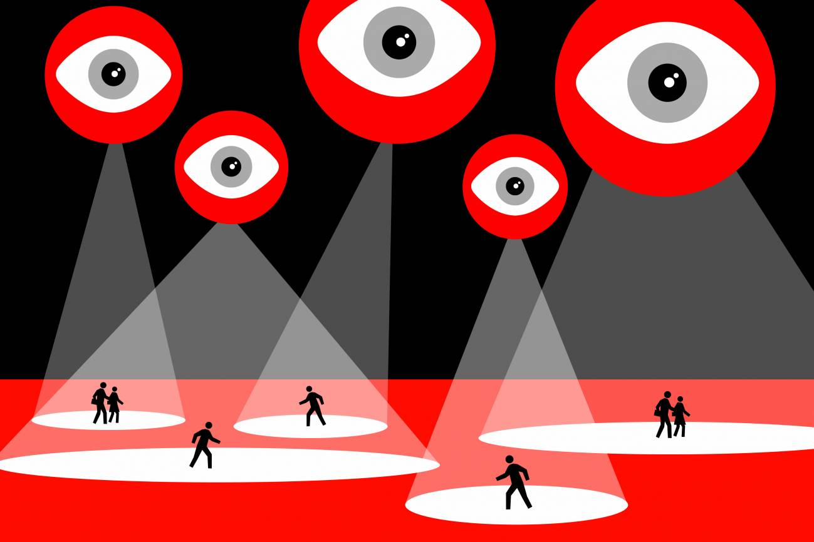

La Neolengua Digital y el silencio de las palabras.
Publicado el 13 de febrero de 2026
“La neolengua tenía como objetivo no solo proporcionar un medio de expresión a la cosmovisión del Partido, sino hacer imposible cualquier otro modo de pensamiento.” – George Orwell, 1984
Cuando pienso en la neolengua de 1984, me estremezco al darme cuenta de cuánto se parece a lo que sucede en nuestro mundo digital. En la novela, el Partido reduce el lenguaje a palabras simples, eliminando matices para restringir la capacidad de pensar críticamente. Hoy, en 2025, las redes sociales, los memes y los titulares parecen estar creando una versión moderna de esta neolengua, donde las ideas complejas se sacrifican por brevedad y viralidad.
Piensa en cómo comunicamos ahora. Frases cortas, emojis, hashtags... Todo está diseñado para ser rápido y digerible. ¿Cuántas veces reducimos una discusión profunda a un tuit de 200 caracteres? O menos. ¿O usamos un meme para expresar algo que merece un análisis? ¿O mandamos un emoji para transmitir un sentimiento que podríamos comunicar con profundidad y detalle? Ojo, no digo que estas herramientas sean malas y soy plenamente consciente de que el lenguaje evoluciona, como siempre lo ha hecho y lo hará, pero me preocupa que se esté limitando nuestra capacidad de articular pensamientos complejos. Si no tenemos palabras para describir la libertad, la injusticia, la resistencia o un sentimiento, ¿cómo podremos defenderlo?
En 1984, la neolengua era una herramienta de control. En nuestro mundo, no necesitamos un Partido que imponga un diccionario reducido; lo hacemos nosotros mismos al aceptar un lenguaje simplificado. Las plataformas nos premian por mensajes cortos, por opiniones que encajan en una caja de texto de 150 caracteres. Pero cuando nuestras palabras se encogen, también lo hace nuestra imaginación.
Me pregunto: ¿estamos perdiendo la habilidad de soñar con un mundo diferente porque no sabemos cómo nombrarlo?
Aún hay esperanza; creo que podemos resistir esta neolengua digital siendo conscientes de cómo usamos el lenguaje. Leer libros, escribir con detalle, pensar sin priva, conversar profundo: estos son actos de rebeldía contra un sistema que quiere que pensemos menos. En este blog, quiero recuperar las palabras, usarlas para explorar ideas que no caben en una red social. ¿Sientes que el lenguaje se está desvaneciendo en tu vida? ¿Cómo lo recuperas? Comparte tus pensamientos conmigo y sigamos desafiando el silencio.
Hasta la próxima reflexión,
R.